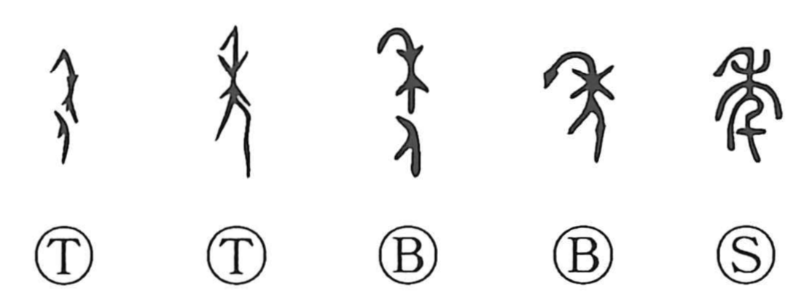

Explanation
年 combines 禾, grain, with a person. The grain-shaped form is a headdress embodying the grain spirit, worn by a dancer in a rite for a plentiful harvest. The lower figure is 人 in the earliest forms.
Men and women danced in pairs. Their enacted union was believed to stimulate the fertility of the fields; the female dancer appears in 委, and a child's dance in 季. The lowered posture and grain headdress belong to this shared agricultural ceremony.
A dance anticipating abundance gives 年 the sense of ripening or harvest. Since the crop ripens once in its annual cycle, the harvest also measures a year. 稔 later distinguishes ripening grain, while 年 becomes the ordinary word for a year, a person's years of age, and the period in which an event occurs.